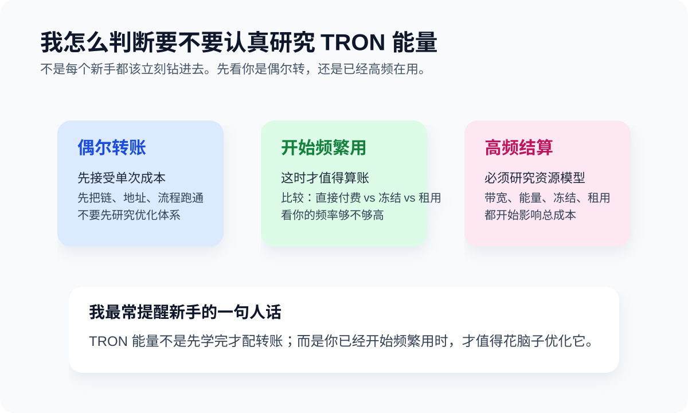

TRON 能量指南
Chapter 3 · TRON / TRC20 · Last updated: 2026-04-14

这篇解决一个高频问题：为什么你明明有 TRC20 USDT，转账时却还是可能失败，或者被扣到你怀疑人生。我先说结论，这不是你一个人的问题，而是几乎每个第一次认真碰 TRON 的人都会撞上的坑。
TL;DR
在 TRON 上发送 USDT，很多时候不只是“有币就行”，还要考虑网络资源。我自己的理解一直很粗暴但很好用：链上执行动作需要消耗资源，资源不足时，成本会更高，或者动作直接失败。你先把这件事记住，后面很多提示就没那么像天书了。
先把概念讲人话
TRON 上常见两个词：Bandwidth 和 Energy。我自己的记法一直很土，但很好用：
- Bandwidth：更像基础流量。
- Energy：更像执行合约动作要消耗的资源。
TRC20 USDT 转账经常会涉及合约调用，所以很多人第一次用 TRON 时，实际碰到的问题不是“不会转”，而是“为什么我有 USDT 还转不出去”。你如果先把它理解成“资源不足”，整件事会比死记定义轻松得多。
一个我觉得很有用的外部事实
TokenPocket 与 TRON 官方合作的《The Past, Present and Future of TRON Wallet》里提到过两个对新手很有帮助的点：
- 新账户需要先激活才能正常使用，做法通常是先向新地址转入任意数量的 TRX。
- 每 24 小时 TRON 会给账户 5000 免费 Bandwidth Points；如果不够，链上会通过消耗 TRX 来完成交易。
这两条很实用，因为它们直接解释了两件新手最容易困惑的事：为什么“地址未激活”会导致你发不过去；为什么有时候你明明只是转一笔，还是会看到 TRX 被消耗。
为什么会提到 TRX
因为在 TRON 上，资源不足时，链上动作的成本通常会和 TRX 有关系。对新手来说，不需要一开始就把整套资源模型背下来，只需要先记住：
- TRC20 USDT 转账不是完全零成本。
- TRON 资源不足时，可能要额外付出成本。
- 所以很多人会在钱包里额外准备一点 TRX，避免“币在那，但动作做不了”。
我认为最值得你看的官方参考
如果你准备认真用 TRON，这几份官方资料都值得补一遍 —— 比任何中文二手解读都准确。
什么时候你真的需要关心能量
- 你已经开始频繁发送 TRC20 USDT。
- 你发现自己的转账成本不稳定。
- 你在帮别人代付、结算，转账频率高。
- 你已经从“先跑通流程”进入“想优化成本”的阶段。
如果你只是第一次转账，重点还是先完成一笔小额测试，而不是先钻进资源优化兔子洞。
租能量这件事，怎么理解最省脑子
你可以把它理解成：按需买一段时间的链上资源使用权。它适合高频用户，不一定适合第一次上手的人。我自己的态度一直很明确：先把流程跑通，再研究优化；别一开始就为了省几块钱，把自己送进一套更复杂的系统里。
- 偶尔转：先接受单次成本，把流程跑通。
- 开始频繁转：再比较总成本，考虑是否值得优化。
- 非常高频：这时再认真研究能量、带宽、租用方案。
最容易踩的坑
- 以为有 USDT 就一定能转：不一定。资源不足时，你可能卡在最后一步。
- 把能量当成另一种币：它更接近资源，不是拿来炒的资产。
- 第一次就研究极限省费：流程都没跑通，先别追求优化到小数点后。
- 为了租能量暴露私钥或助记词：这不是优化，是送钱。
风险提醒
任何需要你提供助记词、私钥、Keystore 文件的“能量服务”，都应视为高风险。正常的资源方案不应该要求你交出钱包控制权。